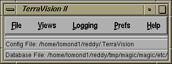

% cd /homedir % zcat tv-dist.tar.Z | tar xf -(N.B. the percent symbol '%' is meant to represent the shell prompt and is not part of the command). You should replace "zcat" with "gzcat" if you have downloaded the tar.gz (gzipped) version. Note that the distribution extracts into a TerraVision directory by default.
# csh script to setup environment for TerraVision
setenv TVHOME /homedir/TerraVision
set path = ($path $TVHOME/bin)
This is done to help TerraVision find various support files such as
images, help files, master config files, etc. If you do not set a
TVHOME environment variable, then TerraVision will use the current
directory where you ran TerraVision from.
% TerraVisionThis should give you the main TerraVision menu. This menu bar is used to access all of the functionality of TerraVision and looks like:

The first thing that you will probably want to do is to look at some terrain. Here is a quick overview of the 3 steps that you need to perform to see something interesting in TerraVision:
| Option | Description |
| -help or -h | Displays information about the command line arguments supported by that version of TerraVision. |
| -debug [masks:]level | Set debugging level for TerraVision, and optionally the debugging masks. The debugging options cause TerraVision to output various diagnostic messages to the shell window that it was run from. The level value can be any value in the range 1-4, the mask string can be made up of any of the following characters: 'A' (All), 'T' (Tiles), 't' (Texturing), 'i' (Init), '2' (2-D Viewer), '3' (3-D viewer), 'm' (Map Viewer), 'o' (OpenGL), or 'v' (Visiblity). If you do not specify a set of debugging masks, then all masks will be enabled. For example, -debug 2 or -debug Tt3:1 |
| -license | Displays the TerraVision license agreement. You will always be presented with this requester whenever you first use a new version of TerraVision. However, you can use this option if you would like to see the agreement again. You will have to accept the license before you can use the TerraVision system. |
| -oi | Specifies a default OI (imagery) URL. If you also specify a default DEM URL with the -dem option, then TerraVision will automatically load this dataset when it first starts up. |
| -dem | Specifies a default DEM (elevation) URL. If you also specify a default OI URL with the -oi option, then TerraVision will automatically load this dataset when it first starts up. |
| -view 2D|3D | If you specify -view 2D, then after the first dataset has been loaded, the Overhead Viewer will be displayed. Similarly, if you specify -view 3D, then the Out The Window Viewer will be displayed after the first dataset has loaded. You can combine this option with the -dem and -oi options in order to make TerraVision automatically load a particular dataset and display it on startup. |
| -cmd COMMAND | The -cmd option lets you specify an OAA-style command that will be executed on startup (when a viewer window is opened). You can specify multiple -cmd options on the command line in order to setup your default settings. You can find the OAA command list from OAA Interface documentation. For example, -cmd "set('SHOW_WIREFRAME',1)" |
| -proxy URL | Specifies the full URL of your http proxy server. You will probably need to specify this if you are running TerraVision from behind a firewall and want to access datasets on external servers. |
| -debug_dpss | If this version of TerraVision has been compiled with DPSS support, then setting this command line option will switch on the DPSS internal debugging mode. |
| -verbose_dpss | If this version of TerraVision has been compiled with DPSS support, then setting this command line option will switch on the DPSS internal verbose mode. |
| -config filename | This option lets you specify an alternative .TerraVision file. This is the file that is used to store all of your personal configuration settings for TerraVision. By default, TerraVision will use the $HOME/.TerraVision file. |
| -log | This option will tell TerraVision to start logging immediately upon start up. Then, whenever you open a dataset, logging will be turned on for that dataset. Note that you can customise the logging output by putting resources into your $HOME/.TerraVision file. For example, "*netloggerDirectory: /tmp" will send all NetLogger output to the directory /tmp. |
| -path | This option specifies the filename of a path to be loaded and played when the 3-D viewer first opens. You do not need to specify the .path extension (it will be added if not present). The user's default path directory will be prepended to the file you specify, i.e. you should specify a filename relative to the $HOME/.TerraVisionPaths/ directory. If the file does not exist, then TerraVision will act as if you did you specify this option. |
| -viewpoints URL | Specifies the full URL of your viewpoint bookmarks file. By default, this file is $HOME/.TerraVisionViewpoints. Use this option to define another viewpoints file. This may be an http URL (although note that you cannot add viewpoints to a file that is located on an http server). |
| -droptowireframe HZ | TerraVision will automatically drop into wireframe mode whenever you are navigating and the frame rate drops below a certain threshold. This is done to improve the frame rate and visual feedback during periods of navigation. The display returns to its previous mode when stopped. The default setting for this option is 5.0 Hz. Setting this value to 0.0 will disable the option, i.e. never drop to wireframe based on the frame rate. |
|
-oaa host:port -oaahost host -oaaport port |
Lets you connect to an OAA facilitator. OAA stands for
Open Agent
Architecture, a framework for integrating a community of
heterogeneous software agents in a distributed environment.
TerraVision is OAA-enabled in that it can act as an "agent",
advertising its capabilities as a 3-D terrain
visualization system with a central facilitator. You connect to a facilitator by supplying its host name and port number, e.g. -oaa trestle.ai.sri.com:3344. |
| -cave | Run the CAVE version of TerraVision. This option is only available if the TerraVision binary was compiled with CAVE support. |
| -debugTexture | Uses a debug texture instead of loading texture maps from the OI (image) pyramid. |
| -v | Displays the version number of the TerraVision product, as well as the DPSS and tsmApi libraries that were used to build the binary. |